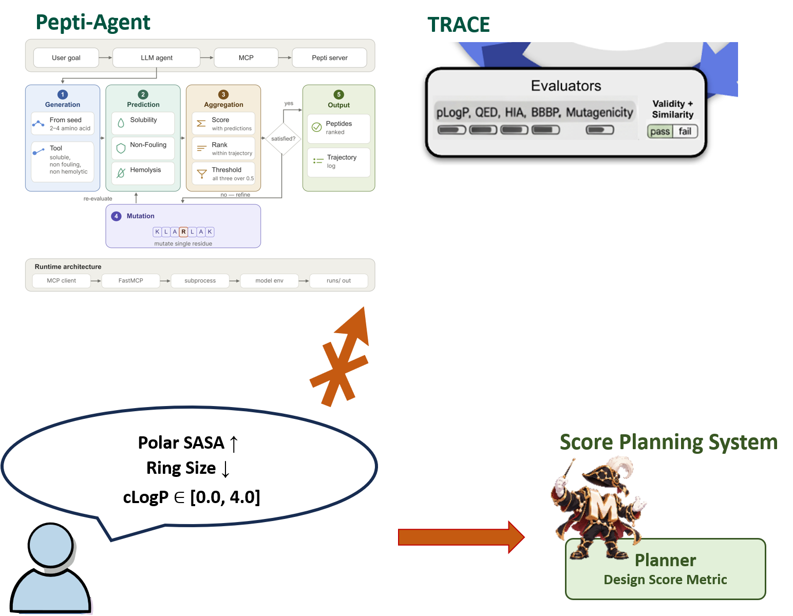
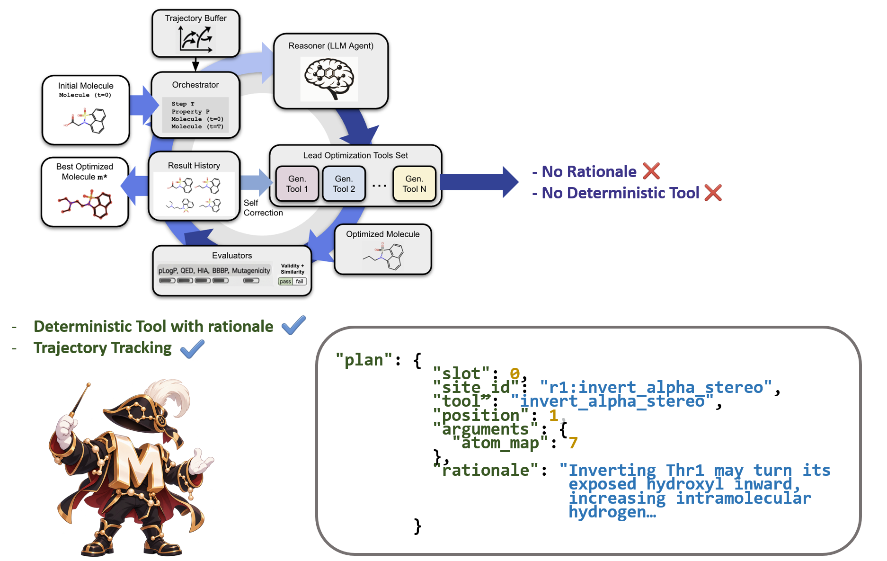
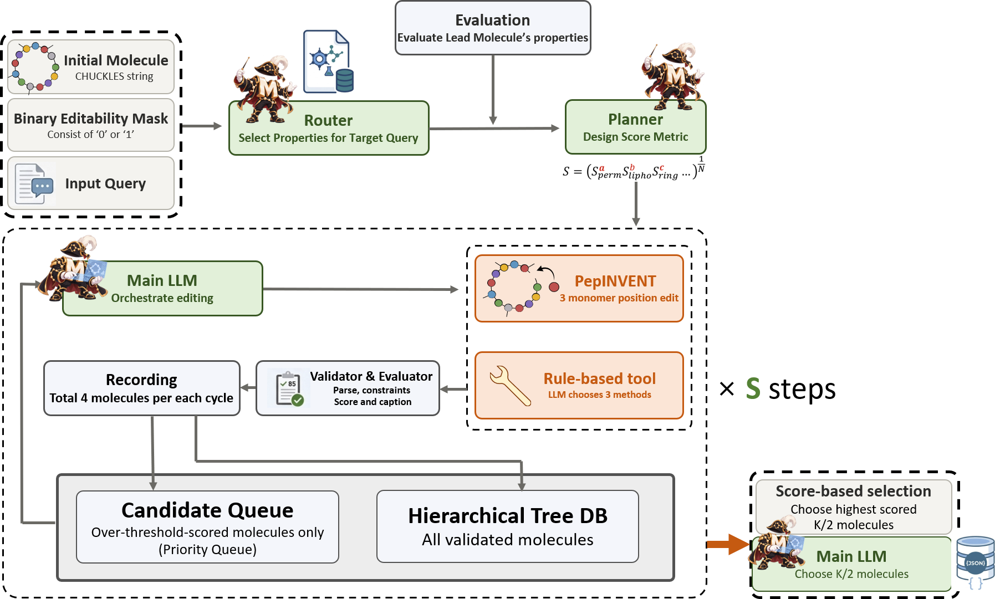
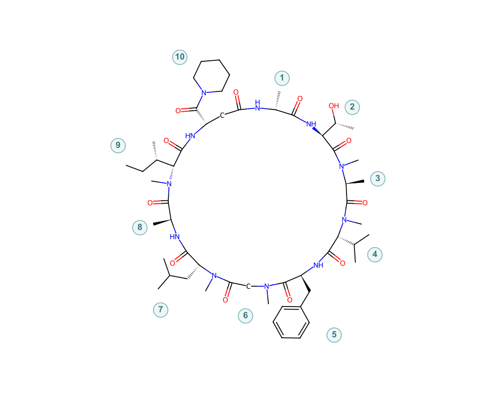
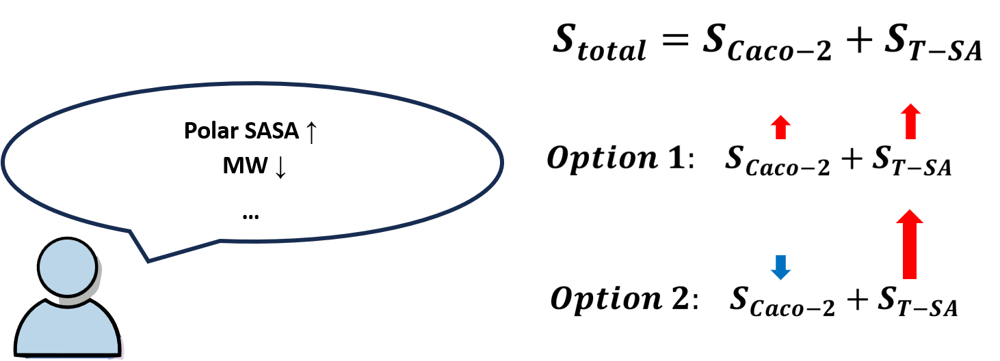
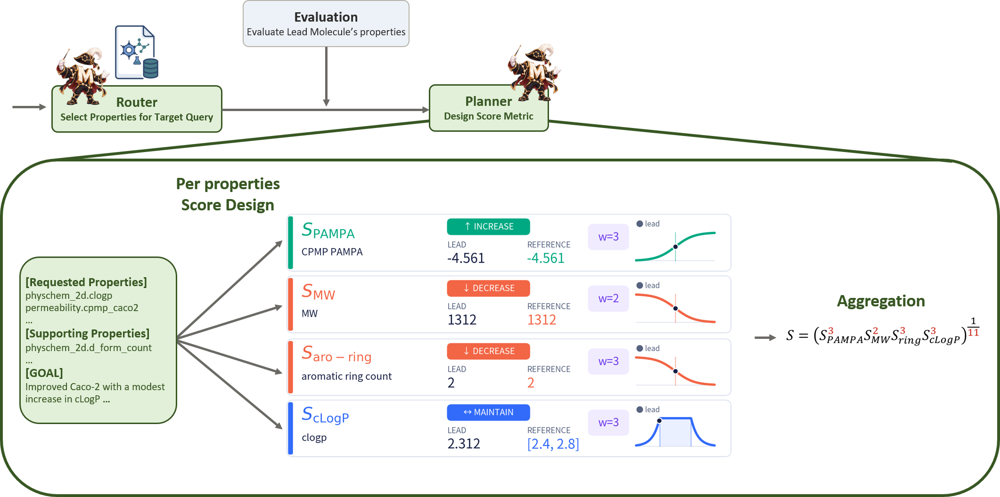
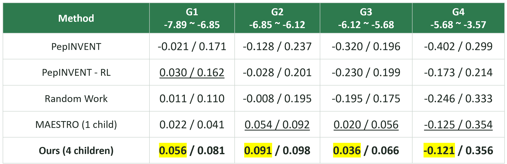
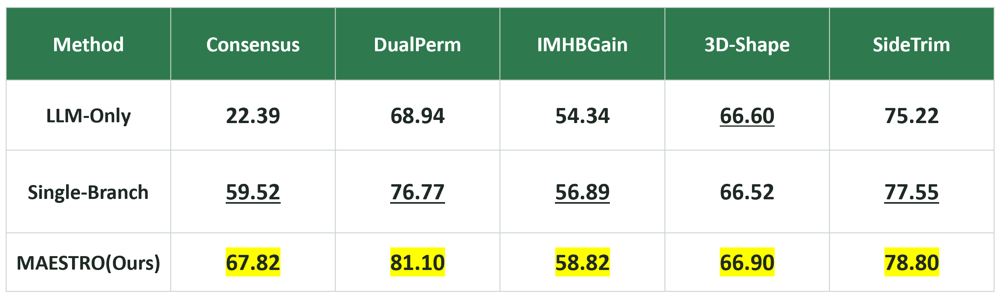
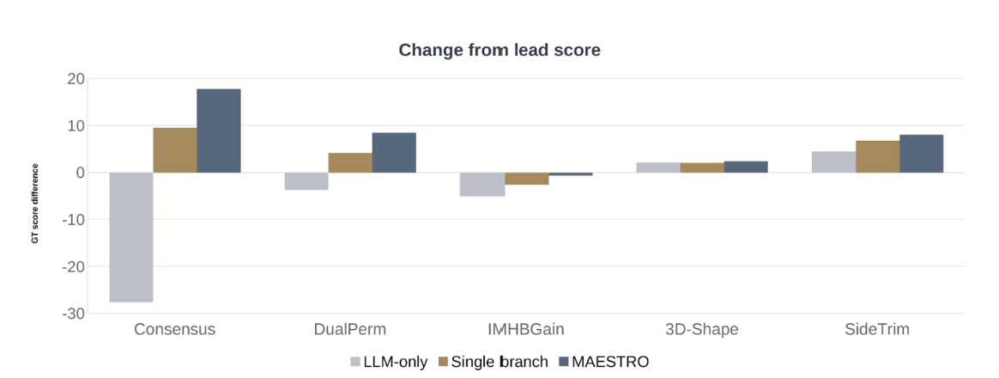
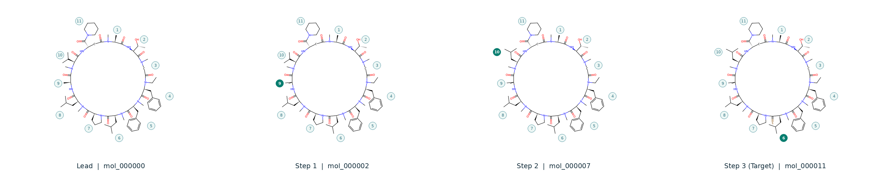

Macrocyclic-peptide Agent for Editing, Scoring, Tool-utilizing Refinement & Optimization
팀 뇌냠냠아메바 Team 뇌냠냠아메바
거대고리 펩타이드(MCP)는 저분자로 접근하기 어려운 단백질–단백질 상호작용 표면을 겨냥할 수 있는 modality다. 결합 후보의 탐색에는 이미 성숙한 플랫폼이 존재하지만, 그 후보를 약물로 전환하는 리드 최적화 단계에서는 기존 도구가 대상의 특성을 다루지 못한다.
Macrocyclic peptides (MCPs) can reach protein–protein interaction surfaces that small molecules cannot. Finding candidates that bind a target is by now a mature technology — but turning one of those candidates into an actual drug is where the existing tools stop working well.
mRNA display와 RaPID 등의 디스플레이 기술은 대규모 랜덤 라이브러리로부터 표적에 결합하는 MCP 서열을 효율적으로 선별한다. 그러나 결합력의 확보가 곧 약물로서의 작동을 보장하지는 않는다. 세포내 표적을 겨냥하는 경우 충분한 막투과성이 요구되며, 경구 투여를 목표로 할 경우 장내 안정성과 용해도, 흡수가 함께 충족되어야 한다. 경구용 MCP인 MK-0616이 임상 2b상에서 LDL 콜레스테롤을 유의하게 감소시킨 사례는 이러한 조건을 모두 만족하는 MCP가 실현 가능함을 시사한다. 결합 후보와 약물 사이의 간극을 좁히는 과정이 리드 물성 최적화이며, MAESTRO가 다루는 대상 또한 이 지점이다.
Display technologies such as mRNA display and RaPID find MCP sequences that bind a target efficiently, out of enormous random libraries. Binding well, however, does not make a drug. Reaching a target inside the cell means getting across the membrane; aiming for oral dosing means gut stability, solubility and absorption have to line up as well. The oral MCP MK-0616, which significantly lowered LDL cholesterol in Phase 2b, shows that an MCP meeting all of those conditions is genuinely achievable. Closing the distance between a binder and a drug is lead property optimization — and that is where MAESTRO works.
MCP에서 이 최적화는 특히 까다롭다. 잔기 하나의 치환이나 입체 배치의 반전과 같은 국소적 편집만으로도 고리의 접힘과 극성기의 노출 양상이 달라지며, 이에 따라 막투과성과 용해도가 동시에 변화한다. 분자량이나 극성기 개수와 같이 분자 그래프에서 계산되는 2D 지표로는 이러한 변화를 포착할 수 없다. 즉, 편집의 효과를 판정하는 일 자체가 3차원 구조 수준의 평가를 요구한다.
The difficulty is that this optimization is unusually delicate in MCPs. Swapping one residue or flipping one stereocenter is enough to change how the ring folds and how far its polar groups are exposed — and permeability and solubility move together with it. 2D descriptors counted off the molecular graph, such as molecular weight or the number of polar groups, cannot read a change like that. Telling a good edit from a bad one requires evaluation at the level of 3D structure.
최적화할 물성이 소수로 고정되어 있어, 구조적 제약·허용 범위·개선 목표를 동시에 담은 실제 요구를 표현할 수 없다.
The set of optimized properties is fixed and small, so a real request — structural constraints, tolerated ranges and improvement targets at once — cannot be stated.
투과성은 고리의 접힘에 지배되는데, 분자 그래프에서 계산되는 지표만으로 편집의 효과를 판정한다.
Permeability is governed by how the ring folds, yet the effect of an edit is judged from descriptors computed on the molecular graph alone.
편집 연산이 생성 모델에 내재화되어 있어, 출력된 분자는 보여도 어느 위치에 어떤 연산이 왜 적용되었는지는 복원되지 않는다.
Editing lives inside the generative model: you can see the molecule that came out, but not which operation was applied where, or why.


초기화에서 자연어 목표가 점수 함수로 고정되고, 반복 단계가 그 점수를 기준으로 best-first 탐색을 수행한다.
Initialization freezes the natural-language goal into a scoring function; the iterative stage then runs a best-first search against that score.

리드 분자는 모노머 단위를 |로 구분하는 CHUCKLES 표현으로 주어진다.
SMILES와 달리 잔기 경계가 보존되므로, 비천연 아미노산을 포함한 분자에서도
"몇 번 잔기"라는 단위로 편집과 평가를 다룰 수 있다.
The lead is given in CHUCKLES, which separates monomers with |.
Unlike plain SMILES it preserves residue boundaries, so editing and evaluation can be addressed
per residue even for molecules containing non-natural amino acids.

N1[C@H](C)C(=O)|N[C@@H]([C@@H](C)O)C(=O)|N(C)[C@@H](C)C(=O)|N(C)[C@H](C(C)C)C(=O)| N[C@@H](Cc2ccccc2)C(=O)|N(C)CC(=O)|N(C)[C@H](CC(C)C)C(=O)|N[C@@H](C)C(=O)| N(C)[C@H]([C@H](CC)C)C(=O)|N[C@@H](CC1=O)C(=O)N1CCCCC1 BEM 1 1 0 1 0 1 1 1 1 0 ← 0 = 보존 / locked
BEM은 편집 허용 잔기의 비율과 위치만으로 탐색 범위를 조절한다.
구조 보존형 최적화부터 광범위한 편집 탐색까지 같은 입력 형식으로 표현되며,
결합에 필수적인 잔기는 0으로 지정해 보호한다.
유사도 임계값은 어느 부분이 보존되는지를 규정하지 못하지만, BEM은 위치 단위로 그것을 명시한다.
The BEM controls the breadth of the search purely through which residues are
editable and how many — from conservative refinement to wide exploration, in the same input
format. Residues essential for binding are protected by marking them 0. A similarity
threshold can never specify which part is preserved; the BEM states it position by
position.
쿼리와 물성 설명만으로 계산할 물성 조합을 선택한다. 리드 분자의 물성값은 참조하지 않는다. 물성 선택이 특정 분자의 수치에 anchoring되지 않고, 사용자의 요구와 물성의 정의에만 근거하도록 하기 위한 설계다.
Selects which properties to compute from the query and the property descriptions alone. It never looks at the lead's property values — so the selection stays anchored to the user's request and the definition of each property, not to one molecule's numbers.
2D 물리화학 지표와 막투과성 예측에 더해, SASA·분자 내 수소결합·형상 같은 구조 의존적 물성을 다중 3D conformer 앙상블에서 계산한다. 잔기 종류, N-메틸화 위치, D/L-form, 잔기별 SASA와 수소결합 같은 구조 정보는 점수 대상이 아니어도 함께 보존되어 이후 편집 판단의 근거가 된다.
Beyond 2D physicochemical descriptors and permeability prediction, structure-dependent properties — SASA, intramolecular hydrogen bonds, shape — are computed over a multi-conformer 3D ensemble. Residue-level context such as residue type, N-methylation sites, D/L form and per-residue SASA is kept alongside, even when not scored, because the editing stage reasons from it.
쿼리, Router의 응답, 리드의 물성 프로파일을 받아 각 물성의 개선 방향과 기준값, 중요도를 결정한다. 점수 식의 산술 구조는 시스템이 고정하고, Planner는 그 인자만 채운다.
Takes the query, the Router's response and the lead's profile, and assigns an improvement direction, a reference and an importance to each property. The arithmetic of the score is fixed by the system; the Planner only fills in its parameters.
큐는 특정 가지에 국한되지 않으므로, 직전에 생성된 자식이 아니라 지금까지 발견된 모든 후보 중 최고점이 다음 부모가 된다. 매 스텝 하나의 가설만 이어가는 단일 브랜치 탐색과 달리 여러 경로를 동시에 유지한다.
The queue is global rather than per-branch, so the next parent is the highest-scoring candidate found so far, not necessarily the child just produced. Unlike a single-branch search carrying one hypothesis forward per step, several paths stay alive at once.
편집은 결정론적 도구 호출로 이루어진다. 분자 그래프를 조작하는 28종의 편집 함수와 잔기 단위 치환 12종이 등록되어 있고, N-메틸화·입체 반전부터 측쇄 교체, 잔기 전체 교체, 고리 연결부 변형까지 다룬다. 시스템이 부모에 적용 가능한 site만 열거해 제시하므로 LLM은 어느 위치에 어떤 연산을 적용할지만 결정하고 그 근거를 남긴다. 각 계획은 동일한 부모에 독립적으로 적용되어 서로 다른 자식이 되며, 병렬로 PepINVENT 분기가 규칙 범위 밖의 잔기를 생성한다.
Editing happens through deterministic tool calls. 28 graph-editing functions and 12 residue-level substitutions are registered, covering N-methylation and stereo inversion through side-chain swaps, whole-residue replacement and linkage modification. The system enumerates only the sites applicable to the parent, so the LLM decides only where to apply which operation and records why. Each plan is applied independently to the same parent to yield distinct children, while a PepINVENT branch runs in parallel to reach residues the rules cannot.
두 경로의 자식을 합쳐 BEM 보호 위치의 불변과 화학적 타당성을 검사하고 중복을 제거한다. 통과한 자식은 점수화되어 점수가 낮아도 삭제되지 않은 채 전부 트리 DB에 기록된다. 큐에는 상위 후보만 선별적으로 등록하되, 한 부모에서 최소 두 갈래가 이어지도록 하여 조기 수렴을 방지하고, 한 부모의 자식이 큐를 점유하는 것 또한 제한한다.
Children from both branches are checked for invariance of BEM-protected positions and chemical validity, then de-duplicated. Survivors are scored and all of them are kept in the tree DB, low scores included. Only the better ones enter the queue, with a floor that keeps at least two branches alive per parent and a ceiling that stops one parent's children from capturing it.
점수 순 상위 k개를 고르거나, 절반은 점수로 고르고 나머지는 LLM이 트리 DB를 보며 고른다. 후자는 목적함수가 포착하지 못한 기준으로 후보를 한 번 더 걸러내기 위한 선택지다.
Either the top-k by score, or a hybrid in which half are chosen by score and the rest by the LLM reading the tree DB — the latter being an option for screening candidates once more on criteria the objective did not capture.
Planner는 자연어로 표현된 모호한 다중물성최적화(MPO) 요구를 에이전트가 최적화할 수 있는 구조로 변환한다. 이 변환을 LLM에게 '점수 식 생성'의 형태로 일임할 경우 두 유형의 실패가 발생한다.
The Planner converts a vague, natural-language multi-property optimization (MPO) request into something the agent can optimize. Delegating that conversion to an LLM as "write me a scoring function" fails in two characteristic ways.
물성 점수를 산술합으로 결합하면 한 물성의 큰 이득이 다른 물성의 미달을 상쇄한다. "막투과성과 전체 표면적을 모두 높여라"라는 요구에서, 표면적만 크게 높이고 투과성이 무너진 분자가 두 목표를 고르게 만족한 분자보다 높은 점수를 받을 수 있다. 사용자의 의도는 동시 만족이지만 산술합은 이를 표현하지 못한다.
Combining per-property scores by arithmetic sum lets a large gain on one property compensate for a shortfall on another. Asked to "raise both permeability and total surface area", a molecule that inflates surface area while permeability collapses can outscore one that satisfies both moderately. The user meant simultaneous satisfaction; a sum cannot express that.

물성별 점수를 공통 범위로 사상하지 않고 원값을 그대로 결합하면 절대적 크기가 큰 항이 총점을 지배한다. 분자량과 Polar SASA를 함께 다루는 식에서는 수백에서 1,000 이상인 분자량의 변화가 훨씬 크므로, Polar SASA는 스케일 차이만으로 총점에 사실상 기여하지 못한다.
Combining raw values without mapping each property onto a common range lets the term with the largest magnitude dominate. In an expression over molecular weight and polar SASA, molecular weight ranges in the hundreds to over a thousand, so its variation swamps that of polar SASA — which then contributes essentially nothing, purely because of scale.
두 실패 모두 사후 검증으로 교정하기 어렵다는 점이 문제의 본질이다. 그래서 MAESTRO는 점수 함수의 산술적 구조를 시스템에 고정하고, Planner에게는 그 구조의 인자를 채우는 의미론적 결정만 맡긴다. MPO 문제를 개별 물성의 단변량 만족도 문제로 분해한 뒤, 고정된 집계 연산으로 재결합하는 방식이다.
What makes both failures hard is that neither can be reliably caught after the fact. So MAESTRO fixes the arithmetic structure of the scoring function in the system and leaves the Planner only the semantic decisions that fill it in: the MPO problem is decoupled into univariate satisfaction problems per property, then recombined by a fixed aggregation operator.

S = ( S₁^w₁ · S₂^w₂ · … · Sₙ^wₙ ) ^ (1 / Σwᵢ) Sᵢ ∈ (0, 1]
기하평균은 결합 연산에 연접적(conjunctive) 의미론을 부여한다. 어느 한 물성의 점수가 0에 가까우면 다른 물성의 성취와 무관하게 총점이 억제되므로 산술합의 상쇄 문제가 원천적으로 차단된다. 또 모든 물성 점수가 (0, 1] 구간에 놓이므로 서로 다른 단위와 범위를 갖는 물성이 같은 축 위에서 비교되어 스케일 지배도 사라진다. 중요도 w는 각 물성의 미달이 총점에 미치는 민감도를 조절한다.
The geometric mean gives the combination conjunctive semantics: if any one property scores near zero, the total is suppressed regardless of what the others achieve, so the compensation problem is eliminated at the root. And because every property score lies in (0, 1], properties with different units and ranges are compared on the same axis — scale domination disappears too. The importance w tunes how sharply a shortfall on a given property pulls the total down.
CycPeptMPDB의 분자를 실측 Caco-2 값에 따라 4분위로 분할하고 각 그룹에서 6개씩 샘플링하여 총 24개의 리드를 구성하였다. 각 리드에 대해 BEM의 편집 허용 위치를 무작위로 지정하여 32회 반복하고, 점수 개선 폭의 평균과 표준편차를 측정한다. 탐색 깊이는 1스텝으로 고정하여 편집 자체의 품질만을 비교한다.
From CycPeptMPDB, molecules were split into quartiles by measured Caco-2 and six sampled from each, giving 24 leads. For each lead the BEM's editable positions are assigned at random and the run is repeated 32 times, measuring the score improvement. Search depth is fixed at one step so that only the quality of the edit itself is compared.

MCP 에이전트에 대한 표준 평가 기준은 아직 존재하지 않는다. 이에 MCP 리드 최적화에서 빈번히 요구되는 상황을 5종의 태스크로 구성하고, 각각에 대해 GT Score Metric을 정의하였다. 이 지표는 Planner가 구성하는 목적함수와 독립적으로 정의되므로, 에이전트가 스스로 수립한 기준에 의해 평가받지 않는다.
No standard benchmark exists for MCP agents. We built five tasks covering situations that recur in MCP lead optimization, each with a GT score metric. That metric is defined independently of the objective the Planner builds, so the agent is never graded by its own yardstick.
| Task | 입력 쿼리 | Input query |
|---|---|---|
| Consensus | 현재 리드의 Caco-2 값이 실험을 하지 않은 추정값이라 불확실합니다. 현재보다 더욱 신뢰할 수 있으면서 Caco-2를 개선하고자 합니다. 3D 총 표면적도 가능한 한 줄이고 싶습니다. | The lead's Caco-2 value is an unmeasured estimate, so it is uncertain. I want to improve Caco-2 while being more confident in it than now. I would also like to reduce the 3D total surface area as much as possible. |
| DualPerm | 3D 구조를 고려한 cLogP 값이 리드값에서 위아래로 0.5 이상 벗어나지 않게 유지하면서, Caco-2와 PAMPA를 동시에 개선하고자 합니다. 총 표면적에 대한 비극성표면적 비율도 리드와 비슷하게 유지해주세요. | Keep the 3D-aware cLogP within ±0.5 of the lead value while improving Caco-2 and PAMPA at the same time. Please also keep the apolar-to-total surface area ratio close to the lead. |
| IMHBGain | 리드에서 N-메틸화 개수를 일정하게 유지하며, 내부 수소결합을 늘려 극성 작용기를 안쪽으로 차폐하고자 합니다. 또한 PAMPA를 개선하고자 합니다. | Hold the number of N-methylations constant while increasing intramolecular hydrogen bonds so that polar groups are shielded inward. I also want to improve PAMPA. |
| 3D-Shape | 리드로부터의 변경을 최소화하고자 구성 잔기 개수는 무조건 유지하고, 잔기 종류는 최대한 유지하면서 둥근 원반에 가까운 3D 구조를 취하도록 편집해주세요. 잔기를 대거 삭제 및 변경하거나 고리를 여는 편집은 피해주세요. | To minimize change from the lead, the residue count must be preserved and residue types kept as far as possible, while editing toward a 3D structure close to a round disc. Avoid edits that delete or change many residues, or that open the ring. |
| SideTrim | 리드에서 고리 크기와 잔기 수를 보존하면서 곁사슬을 조정해 분자량을 낮추고, Caco-2를 개선하고 싶습니다. | Preserving ring size and residue count, adjust the side chains to lower molecular weight and improve Caco-2. |
비교 대상은 편집 도구 없이 CHUCKLES를 직접 수정하는 LLM-Only, 스텝당 편집을 1회로 제한한 Single-Branch, 그리고 MAESTRO다. LLM-Only와 MAESTRO는 동일한 LLM을 사용하여 백본으로 인한 차이를 제거하였다.
The conditions are LLM-Only (editing CHUCKLES directly with no tools), Single-Branch (one edit per step), and MAESTRO. LLM-Only and MAESTRO use the same LLM so that model capability does not confound the comparison.


다섯 태스크 모두에서 MAESTRO가 가장 높은 점수를 기록하였다. LLM-Only는 Consensus에서 리드 점수를 크게 밑돌았으며, 이는 편집 도구 없이 CHUCKLES를 직접 수정하는 방식이 다중 제약을 동시에 만족시키지 못함을 보여준다. 단일 브랜치 조건은 전반적으로 리드를 개선하였으나 모든 태스크에서 MAESTRO에 뒤졌다. 동일한 스텝 예산에서 한 스텝에 여러 가설을 병렬로 생성하고 그중 최선을 선택하는 구조가 하나의 가설만을 이어가는 구조보다 더 나은 후보에 도달한다. IMHBGain에서는 세 조건 모두 리드를 넘지 못하였으나, 최대 스텝 수를 5로 늘려 재실행할 경우 MAESTRO가 리드를 상회한다.
MAESTRO scores highest on all five tasks. LLM-Only falls well below the lead on Consensus: editing CHUCKLES directly without tools cannot satisfy several constraints at once. The single-branch condition generally improves on the lead but trails MAESTRO everywhere. At equal step budget, generating several hypotheses per step and keeping the best reaches a better candidate than carrying one hypothesis forward. On IMHBGain none of the three beat the lead, but raising the budget to five steps puts MAESTRO above it.
에이전트가 실제로 수행한 3스텝 편집이다. 매 스텝 하나의 잔기가 편집되며, 진한 색으로 표시된 번호가 해당 스텝에서 편집된 모노머다.
A three-step edit the agent actually performed. One residue changes per step; the filled index marks the monomer edited at that step.

α 탄소에 메틸기를 하나 추가하여 입체중심을 제거하고 고리의 국소 토션을 제한한다. 접힘을 고정하는 전형적인 거대고리 편집이다.
A second methyl at the α-carbon removes the stereocenter and restricts local torsion — a classic macrocycle edit for locking a fold in place.
측쇄를 한 탄소 연장하여 비극성 표면과 측쇄 자유도를 조정한다. 골격을 변경하지 않고 소수성 프로파일만을 조절하는 보수적 치환이다.
Extending the side chain by one carbon tunes apolar surface and side-chain freedom — a conservative substitution that shifts the hydrophobic profile without touching the backbone.
주사슬 C=O를 C=S로 치환한다. 수소결합 수용 능력과 극성 표면을 바꾸는 주사슬 변형으로, 2D 지표만으로는 효과를 판정하기 어려워 3D 평가가 필요한 대표적인 편집이다.
The backbone C=O becomes C=S, changing hydrogen-bond acceptor strength and polar surface — exactly the kind of edit whose effect cannot be judged from 2D descriptors.
각 편집은 site 식별자, 위치, 연산, 인수와 함께 자연어 rationale이 계층적 트리 DB에 기록된다. 예컨대 입체 반전 편집에는 "Thr1을 반전시키면 노출된 수산기가 안쪽을 향해 분자 내 수소결합이 증가할 수 있다"와 같은 근거가 남는다. 탐색을 위한 부산물로 설계되었으나 그 자체로 사후 분석이 가능한 자산이며, LLM이 남긴 근거는 검증 가능한 가설로 발전할 수 있다.
Every edit is logged in the hierarchical tree DB with its site identifier, position, operation, arguments and a natural-language rationale — for a stereo inversion, "inverting Thr1 may turn its exposed hydroxyl inward, increasing intramolecular hydrogen bonding." Designed as a by-product of search, the log is an asset in its own right: the rationales can be developed into testable hypotheses.
매 실행이 추적 가능한 trajectory와 우선순위가 매겨진 후보군을 산출하므로, 이들은 합성 및 실험 검증 대상의 선정 근거가 되며 그 결과는 다시 예측기의 학습 데이터로 환류된다.
Every run produces traceable trajectories and a ranked candidate set, which serve as the basis for choosing what to synthesize and test; those results flow back as training data for the predictors.
AlphaFold3·Boltz 계열의 구조 예측 모델과 신경망 퍼텐셜 기반 force field로 conformer 품질 자체를 높이고, 나아가 막 환경을 반영한 conformational ensemble을 구성하는 방향을 검토한다.
Raise conformer quality itself with structure predictors in the AlphaFold3 / Boltz family and neural-network-potential force fields, and ultimately construct conformational ensembles that reflect the membrane environment.
과거 편집 trajectory를 참조하는 Skill Library는 선택적 구성 요소로 구현되어 있으나, 평가 쿼리와의 중복을 배제하려고 본 연구의 모든 실험에서 비활성화했다. 코퍼스를 확대할 경우 재학습 없이 축적된 경험만으로 성능이 향상되는 루프를 닫을 수 있다.
A skill library that retrieves past editing trajectories is implemented as an optional component, but was disabled throughout this work to rule out overlap with the evaluation queries. Scaling the corpus would close a loop in which performance improves from accumulated experience alone.
MCP를 대상으로 삼은 이유는 그것이 특수해서가 아니라 세 조건이 가장 뚜렷하게 나타나기 때문이다 — 국소적 편집이 분자 전체의 물성을 바꾸는 민감성, 신뢰할 수 있는 실험 데이터의 부족, 구조적 제약과 상충하는 다중 물성 목표가 자연어로 주어진다는 점. 요구를 물성 목표와 제약으로 바꾸고 위치 특이적 편집과 평가를 반복하는 구조는 펩타이드·단백질·올리고뉴클레오타이드, 나아가 복잡한 MPO가 필요한 저분자 영역에도 그대로 적용된다. MAESTRO는 MCP 전용 시스템이라기보다 편집 기반 리드 최적화 전반에 대한 템플릿이다.
MCPs were chosen not because they are exotic but because three conditions appear most sharply in them: local edits that move the whole property profile, a shortage of reliable experimental data, and multi-property goals under structural constraints arriving as natural language. The structure — convert a request into objectives and constraints, then iterate position-specific editing and evaluation — carries over to peptides, proteins, oligonucleotides, and to small molecules wherever complex MPO is required. MAESTRO is less an MCP-specific system than a template for edit-based lead optimization in general.